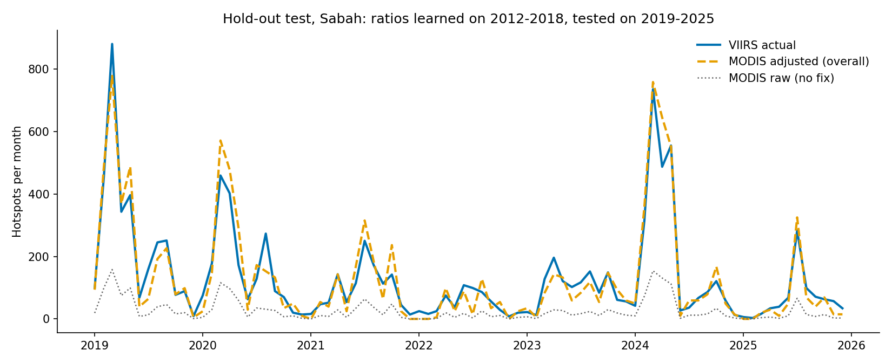

Record shown
Download CSV
Burning activity calendar
Now vs normal
One month compared with the median of the same calendar month over the previous years (up to 10).
Proof 1: the fake jump at 2012
Raw join uses MODIS counts before February 2012 and VIIRS counts after. VIIRS sees more, so fire seems to jump. The harmonized record removes that jump.
Harmonized
Raw join (no fix)
VIIRS starts (Feb 2012)
Show the numbers as a table (yearly totals)
Proof 2: tested on years the method never saw
We learned the ratio on 2012–2018, then predicted VIIRS for 2019–2025 from MODIS alone.

Hold-out test. Blue: real VIIRS. Orange dashes: MODIS × ratio. Grey dots: MODIS with no fix. Chart made by our notebook from NASA FIRMS data.
Results
On test years the method had about 24% total error and agreed on the colour class 86% of the time. Reliable for ranking months and seeing the season. Not for one exact month before 2012.
How it works
- Clean both datasets. Same area, same confidence rule, monthly counts.
- Find the overlap years. Both sensors flew together from 2012.
- Compute the ratio. VIIRS sees about 4.95 times more hotspots than MODIS here.
- Estimate earlier years. MODIS counts before 2012 are multiplied by that ratio.
- Test it. We checked the method on 2019–2025, years it never saw.
Limits
- FIRMS lists detections only, so we cannot prove MODIS missed a fire.
- Hotspots are not burned area.
- Before 2012 values are estimates from MODIS.
- The record starts in 2003 because only one MODIS satellite flew before mid-2002.
- Quiet months are less certain: our ratio under-predicts VIIRS there by about 16%.
- Aqua's overpass drifted after 2022 (05:40 to 07:28 UTC).
- The ratio is proven for Sabah only.
- August to October 2026 is provisional near-real-time data.
- This is a planning tool, not live fire response.